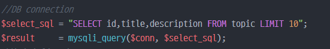

db와 통신하기위해(mysqli api 활용)
-스키마는 innoDB로 정의되어있다.
순서대로 호스트이름, 사용자이름, 암호, 사용DB(스키마) 를 적어준다.

원하는 sql을 입력하고
*select구문을 활용할 때엔 항상 limit를 지정해준다.(뻑이나는 것을 방지하는 좋은 습관)
mysqli_query함수를 통해 db에 query를 보낸 결과값을 가져온다. => return php객체

위에 보는 것처럼,
mysqli_fetch_array() 를 활용해서 한개의 행을 가져온다. => 배열형태로 parshing
php에선 NULL이 false와 같은 값을 가르킨다.
위의 while문을 활용해 계속 sql을 담아서 받으면
db를 통해 가져올 데이터가 바닥날 때까지 가져온다.

개발진행중, 에러를 즉각즉각 화면에 보여주는 api함수
항상 작업시작할 때, require_once(errorDP.php) 입력